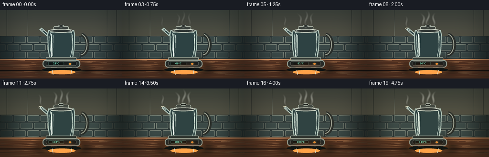
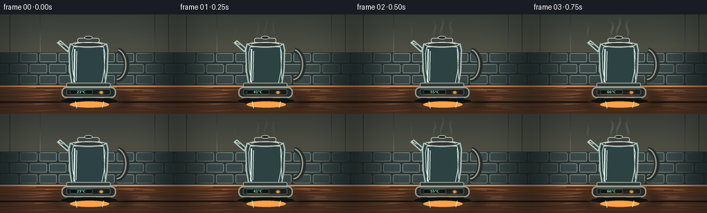
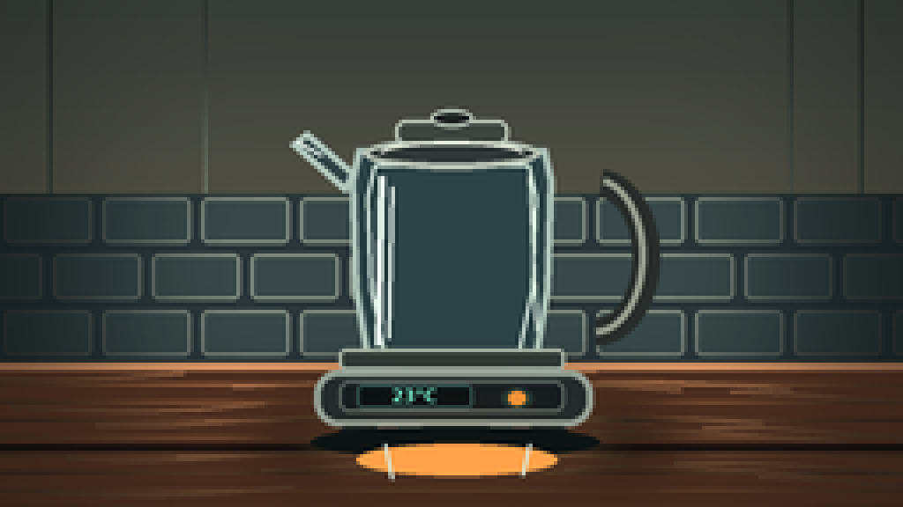
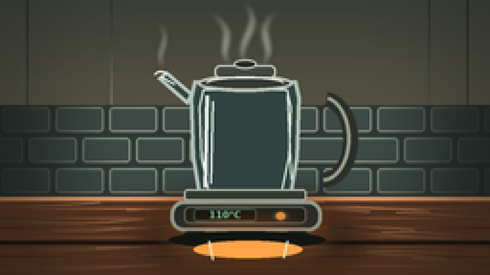
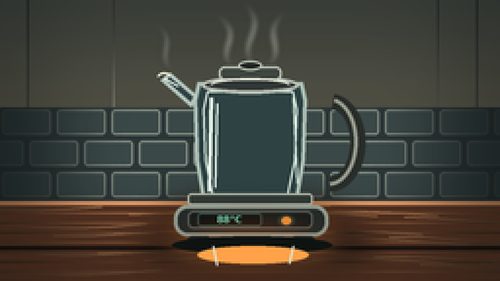
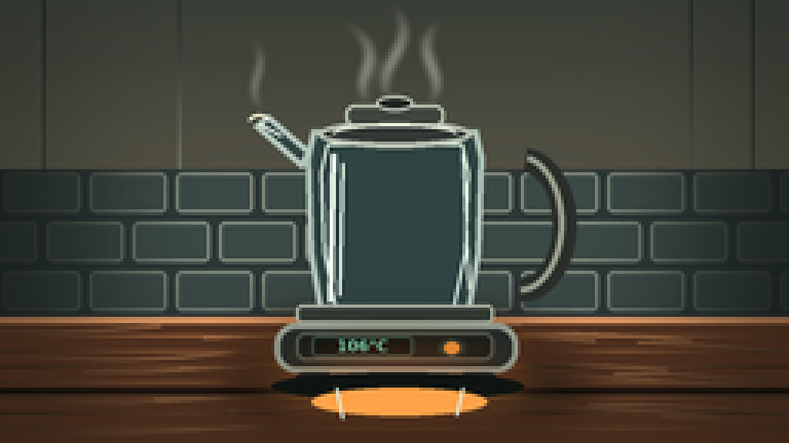

CODING AGENTS AS PIXEL WORLD MODELS
traex/DeepSeek-V4.1-Flash · phygen_107
点击播放 · 原生 RGB 像素
逐轮保存的候选
回放视频、检查图与代码变化。
每份候选均可单独播放。实际图片检查记录在下方工具轨迹中。
候选 01播放与检查图
点击播放 · 原生 RGB 像素

展开代码变化
--- 上一保存版本
+++ 本次保存版本
@@ -0,0 +1,380 @@
+from pathlib import Path
+import math
+
+import numpy as np
+from PIL import Image, ImageDraw, ImageFilter, ImageFont
+
+import artifact_io
+
+
+ROOT = Path(__file__).resolve().parent
+W, H = 256, 144
+SS = 4
+FW, FH = W * SS, H * SS
+
+
+def lerp(a, b, t):
+ return a + (b - a) * t
+
+
+def mix(c1, c2, t):
+ return tuple(int(round(lerp(a, b, t))) for a, b in zip(c1, c2))
+
+
+def font(size, bold=False):
+ names = [
+ "/usr/share/fonts/truetype/dejavu/DejaVuSans-Bold.ttf" if bold else
+ "/usr/share/fonts/truetype/dejavu/DejaVuSans.ttf",
+ "/usr/share/fonts/truetype/liberation2/LiberationSans-Bold.ttf" if bold else
+ "/usr/share/fonts/truetype/liberation2/LiberationSans-Regular.ttf",
+ ]
+ for name in names:
+ if Path(name).is_file():
+ return ImageFont.truetype(name, size)
+ return ImageFont.load_default()
+
+
+def vertical_gradient(size, top, bottom):
+ w, h = size
+ t = np.linspace(0.0, 1.0, h, dtype=np.float32)[:, None, None]
+ top_arr = np.array(top, dtype=np.float32)[None, None, :]
+ bottom_arr = np.array(bottom, dtype=np.float32)[None, None, :]
+ return Image.fromarray(np.uint8(top_arr * (1 - t) + bottom_arr * t).repeat(w, axis=1))
+
+
+def rounded_mask(size, box, radius):
+ mask = Image.new("L", size, 0)
+ ImageDraw.Draw(mask).rounded_rectangle(box, radius=radius, fill=255)
+ return mask
+
+
+def paste_rgba(base, layer):
+ base.alpha_composite(layer)
+
+
+def bezier_points(points, samples=36):
+ p = [np.array(q, dtype=np.float32) for q in points]
+ out = []
+ for i in range(samples):
+ t = i / (samples - 1)
+ a = (1 - t) ** 3 * p[0] + 3 * (1 - t) ** 2 * t * p[1]
+ b = 3 * (1 - t) * t ** 2 * p[2] + t ** 3 * p[3]
+ out.append(tuple(a + b))
+ return out
+
+
+def make_background(frame_t):
+ bg = vertical_gradient((FW, FH), (18, 34, 43), (65, 62, 54)).convert("RGBA")
+ d = ImageDraw.Draw(bg, "RGBA")
+
+ # Soft kitchen wall glow from a warm window offscreen at the upper left.
+ glow = Image.new("RGBA", (FW, FH), (0, 0, 0, 0))
+ gd = ImageDraw.Draw(glow, "RGBA")
+ gd.ellipse((-250 * SS, -180 * SS, 470 * SS, 410 * SS), fill=(255, 218, 151, 50))
+ glow = glow.filter(ImageFilter.GaussianBlur(52 * SS))
+ bg.alpha_composite(glow)
+
+ # Vertical kitchen panel seams and a tiled backsplash.
+ for x in (14, 58, 224, 244):
+ d.line((x * SS, 0, x * SS, 103 * SS), fill=(122, 128, 115, 24), width=SS)
+ d.rectangle((0, 55 * SS, FW, 104 * SS), fill=(42, 54, 56, 80))
+ tile_y = 55
+ row = 0
+ while tile_y < 104:
+ offset = 0 if row % 2 == 0 else 14
+ for tx in range(-offset, 270, 28):
+ d.rounded_rectangle(
+ (tx * SS + SS, tile_y * SS + SS, (tx + 27) * SS - SS, (tile_y + 15) * SS - SS),
+ radius=2 * SS,
+ fill=(57, 72, 72, 60),
+ outline=(133, 143, 132, 22),
+ width=SS,
+ )
+ tile_y += 16
+ row += 1
+
+ # Countertop, edge and wood grain.
+ counter_top = 103 * SS
+ d.rectangle((0, counter_top, FW, FH), fill=(80, 48, 33, 255))
+ for y in range(104, 145, 5):
+ tone = 19 + (y * 7) % 13
+ d.line((0, y * SS, FW, y * SS), fill=(194, 122, 76, tone), width=SS)
+ for i in range(24):
+ y0 = 106 + (i * 13) % 34
+ x0 = -20 + (i * 47) % 290
+ pts = []
+ for j in range(5):
+ pts.append(((x0 + j * 18) * SS, (y0 + 1.8 * math.sin(i + j * 0.8)) * SS))
+ d.line(pts, fill=(229, 155, 104, 25), width=SS, joint="curve")
+ d.rectangle((0, 103 * SS, FW, 105 * SS), fill=(230, 157, 106, 90))
+ d.rectangle((0, 126 * SS, FW, 128 * SS), fill=(40, 24, 20, 55))
+
+ # Counter reflection beneath the kettle.
+ refl = Image.new("RGBA", (FW, FH), (0, 0, 0, 0))
+ rd = ImageDraw.Draw(refl, "RGBA")
+ rd.ellipse((74 * SS, 114 * SS, 191 * SS, 137 * SS), fill=(8, 16, 17, 105))
+ rd.ellipse((90 * SS, 119 * SS, 169 * SS, 134 * SS), fill=(252, 190, 117, 24))
+ refl = refl.filter(ImageFilter.GaussianBlur(8 * SS))
+ bg.alpha_composite(refl)
+
+ # A restrained vignette keeps attention on the kettle.
+ vignette = Image.new("L", (FW, FH), 0)
+ vd = ImageDraw.Draw(vignette)
+ vd.rectangle((0, 0, FW, FH), fill=0)
+ vd.rounded_rectangle((16 * SS, 8 * SS, 240 * SS, 139 * SS), radius=30 * SS, fill=255)
+ vignette = vignette.filter(ImageFilter.GaussianBlur(22 * SS))
+ black = Image.new("RGBA", (FW, FH), (3, 8, 10, 82))
+ black.putalpha(Image.fromarray(np.uint8((1 - np.asarray(vignette) / 255.0) * 82)))
+ bg.alpha_composite(black)
+ return bg
+
+
+def kettle_geometry():
+ # Kettle body, widened slightly toward the bottom. The inner surface is used
+ # as a clip for milk, reflections, and rising bubbles.
+ outer = [
+ (101, 42), (99, 51), (100, 82), (104, 106),
+ (152, 106), (156, 82), (157, 51), (155, 42),
+ ]
+ inner = [
+ (106, 47), (104, 56), (105, 82), (109, 101),
+ (147, 101), (151, 82), (152, 56), (150, 47),
+ ]
+ return outer, inner
+
+
+def polygon_mask(inner):
+ mask = Image.new("L", (FW, FH), 0)
+ ImageDraw.Draw(mask).polygon([(x * SS, y * SS) for x, y in inner], fill=255)
+ return mask
+
+
+def draw_milk(frame, inner, temp, phase):
+ layer = Image.new("RGBA", (FW, FH), (0, 0, 0, 0))
+ d = ImageDraw.Draw(layer, "RGBA")
+ heat = np.clip((temp - 22.0) / 88.0, 0.0, 1.0)
+ foam = np.clip((temp - 72.0) / 38.0, 0.0, 1.0)
+ level = lerp(69.0, 61.5, foam)
+ milk_top = level + 1.15 * math.sin(phase * 0.8)
+ base_col = mix((238, 235, 218), (252, 231, 190), heat * 0.62)
+
+ d.rectangle((100 * SS, level * SS, 156 * SS, 106 * SS), fill=base_col + (238,))
+ # Shadowed milk near the kettle walls and a luminous central body.
+ d.ellipse((102 * SS, (level + 1) * SS, 118 * SS, 105 * SS), fill=(196, 190, 171, 130))
+ d.ellipse((139 * SS, (level + 2) * SS, 155 * SS, 105 * SS), fill=(205, 193, 165, 105))
+ d.ellipse((113 * SS, (level + 7) * SS, 142 * SS, 101 * SS), fill=(255, 250, 225, 76))
+
+ # Wavy surface and a growing cream-colored froth.
+ surface = []
+ for i in range(61):
+ x = 103 + i * 0.85
+ y = milk_top + 0.75 * math.sin(i * 0.32 + phase * 2.0)
+ if foam > 0.02:
+ y -= (0.7 + 1.5 * foam) * (0.5 + 0.5 * math.sin(i * 0.49 - phase * 3.4))
+ surface.append((x * SS, y * SS))
+ surface += [(154 * SS, 106 * SS), (103 * SS, 106 * SS)]
+ d.polygon(surface, fill=base_col + (244,))
+
+ if foam > 0:
+ for i in range(19):
+ x = 106 + (i * 2.55 + 0.8 * math.sin(i * 2.1 + phase)) % 46
+ y = milk_top - (0.6 + 1.5 * foam) * (0.3 + 0.7 * (0.5 + 0.5 * math.sin(i * 1.7 - phase * 2.3)))
+ r = (0.65 + 1.35 * foam) * (0.8 + 0.2 * math.sin(i * 3.2))
+ d.ellipse(((x - r) * SS, (y - r) * SS, (x + r) * SS, (y + r) * SS),
+ fill=(255, 248, 220, int(155 + 75 * foam)))
+ d.ellipse(((x - r * 0.35) * SS, (y - r * 0.55) * SS,
+ (x + r * 0.35) * SS, (y + r * 0.2) * SS),
+ fill=(255, 255, 246, 170))
+
+ # Small convection bubbles appear well before the rolling boil.
+ bubble_count = int(lerp(3, 27, heat ** 1.25))
+ for i in range(bubble_count):
+ seed = i * 1.618 + 0.37
+ x = 109 + (seed * 23.7) % 38
+ travel = (phase * (0.55 + heat * 1.1) + seed * 4.1) % 31
+ y = 99 - travel
+ if y < milk_top + 1.0:
+ continue
+ r = lerp(0.45, 1.65, heat) * (0.7 + 0.3 * math.sin(seed * 4.3))
+ alpha = int(75 + 150 * heat)
+ d.ellipse(((x - r) * SS, (y - r) * SS, (x + r) * SS, (y + r) * SS),
+ fill=(255, 255, 244, alpha))
+ if r > 0.9:
+ d.arc(((x - r) * SS, (y - r) * SS, (x + r) * SS, (y + r) * SS),
+ start=195, end=340, fill=(186, 166, 132, 175), width=SS)
+
+ # Bright rolling domes at the boil.
+ if foam > 0.28:
+ for i in range(7):
+ x = 110 + i * 6.1 + 1.4 * math.sin(phase * 2.4 + i)
+ y = milk_top + 0.8 + 1.0 * math.sin(phase * 3.1 + i * 1.7)
+ r = 1.4 + 1.7 * foam + 0.35 * math.sin(i * 2.3 + phase)
+ d.ellipse(((x - r) * SS, (y - r) * SS, (x + r) * SS, (y + r) * SS),
+ fill=(255, 247, 211, 220))
+ d.arc(((x - r) * SS, (y - r) * SS, (x + r) * SS, (y + r) * SS),
+ start=12, end=190, fill=(255, 255, 248, 235), width=SS)
+
+ mask = polygon_mask(inner)
+ layer.putalpha(Image.composite(layer.getchannel("A"), Image.new("L", (FW, FH), 0), mask))
+ frame.alpha_composite(layer)
+
+
+def draw_glass_and_kettle(frame, outer, inner, temp, phase):
+ d = ImageDraw.Draw(frame, "RGBA")
+ heat = np.clip((temp - 22.0) / 88.0, 0.0, 1.0)
+
+ # Dark translucent glass body.
+ outer_pts = [(x * SS, y * SS) for x, y in outer]
+ d.polygon(outer_pts, fill=(45, 66, 68, 112), outline=(171, 192, 183, 145), width=2 * SS)
+ inner_pts = [(x * SS, y * SS) for x, y in inner]
+ d.line(inner_pts + [inner_pts[0]], fill=(216, 235, 224, 72), width=SS)
+
+ # Vertical highlights and reflected counter colors on the curved glass.
+ d.line((108 * SS, 50 * SS, 107 * SS, 98 * SS), fill=(225, 242, 231, 105), width=2 * SS)
+ d.line((111 * SS, 53 * SS, 110 * SS, 96 * SS), fill=(235, 248, 238, 45), width=SS)
+ d.line((150 * SS, 50 * SS, 152 * SS, 94 * SS), fill=(205, 222, 211, 40), width=SS)
+ d.arc((104 * SS, 51 * SS, 152 * SS, 103 * SS), 74, 105, fill=(239, 251, 242, 80), width=2 * SS)
+
+ # Metal lid, knob and inner gasket.
+ d.ellipse((103 * SS, 39 * SS, 153 * SS, 48 * SS), fill=(48, 55, 54, 255),
+ outline=(184, 193, 181, 230), width=2 * SS)
+ d.rounded_rectangle((112 * SS, 34 * SS, 144 * SS, 41 * SS), radius=3 * SS,
+ fill=(62, 69, 65, 255), outline=(196, 205, 191, 210), width=SS)
+ d.ellipse((122 * SS, 31 * SS, 134 * SS, 36 * SS), fill=(31, 36, 35, 255),
+ outline=(191, 203, 191, 220), width=SS)
+ d.arc((107 * SS, 40 * SS, 149 * SS, 48 * SS), 195, 345, fill=(242, 247, 232, 180), width=SS)
+
+ # Spout on the left, with a small milk gleam at the boil.
+ d.polygon([(101 * SS, 49 * SS), (87 * SS, 37 * SS), (82 * SS, 41 * SS),
+ (98 * SS, 55 * SS)], fill=(47, 66, 68, 155),
+ outline=(177, 197, 188, 145), width=2 * SS)
+ d.line((84 * SS, 40 * SS, 91 * SS, 44 * SS), fill=(235, 247, 237, 105), width=SS)
+ if heat > 0.58:
+ d.arc((80 * SS, 37 * SS, 88 * SS, 44 * SS), 205, 320,
+ fill=(255, 249, 221, int(90 + 110 * heat)), width=SS)
+
+ # Handle and metal band.
+ d.arc((151 * SS, 48 * SS, 187 * SS, 98 * SS), -83, 91,
+ fill=(40, 45, 43, 255), width=8 * SS)
+ d.arc((154 * SS, 50 * SS, 183 * SS, 95 * SS), -78, 88,
+ fill=(150, 156, 143, 215), width=2 * SS)
+ d.rounded_rectangle((96 * SS, 99 * SS, 160 * SS, 105 * SS), radius=2 * SS,
+ fill=(48, 56, 53, 255), outline=(179, 190, 175, 210), width=SS)
+
+ # Heating base with feet and temperature display.
+ d.rounded_rectangle((89 * SS, 105 * SS, 168 * SS, 121 * SS), radius=7 * SS,
+ fill=(35, 43, 43, 255), outline=(150, 161, 150, 210), width=2 * SS)
+ d.rounded_rectangle((96 * SS, 108 * SS, 160 * SS, 117 * SS), radius=3 * SS,
+ fill=(21, 28, 29, 255), outline=(90, 101, 97, 150), width=SS)
+ d.rounded_rectangle((101 * SS, 109 * SS, 134 * SS, 116 * SS), radius=2 * SS,
+ fill=(9, 17, 18, 255), outline=(48, 80, 75, 220), width=SS)
+ d.ellipse((142 * SS, 110 * SS, 151 * SS, 116 * SS), fill=(35, 55, 49, 255))
+ d.ellipse((144 * SS, 111 * SS, 149 * SS, 115 * SS),
+ fill=(255, 158, 60, int(90 + 150 * heat)))
+
+ temp_text = f"{int(round(temp))}\N{DEGREE SIGN}C"
+ fnt = font(5 * SS, bold=True)
+ bbox = d.textbbox((0, 0), temp_text, font=fnt)
+ tw = bbox[2] - bbox[0]
+ th = bbox[3] - bbox[1]
+ d.text(((101 + (33 - tw / SS) / 2) * SS, (109 + (7 - th / SS) / 2) * SS - bbox[1]),
+ temp_text, font=fnt, fill=(118, 244, 209, 255))
+
+ # The heating plate gets hotter as the milk climbs toward the boil.
+ plate = Image.new("RGBA", (FW, FH), (0, 0, 0, 0))
+ pd = ImageDraw.Draw(plate, "RGBA")
+ pd.ellipse((89 * SS, 112 * SS, 168 * SS, 129 * SS),
+ fill=(255, 112, 43, int(20 + 95 * heat)))
+ plate = plate.filter(ImageFilter.GaussianBlur(8 * SS))
+ frame.alpha_composite(plate)
+
+ # Small feet and a crisp contact shadow.
+ d.rounded_rectangle((96 * SS, 121 * SS, 108 * SS, 125 * SS), radius=2 * SS, fill=(25, 29, 29, 255))
+ d.rounded_rectangle((149 * SS, 121 * SS, 161 * SS, 125 * SS), radius=2 * SS, fill=(25, 29, 29, 255))
+ d.ellipse((88 * SS, 121 * SS, 170 * SS, 130 * SS), fill=(13, 19, 19, 85))
+
+
+def draw_steam(frame, heat, phase):
+ if heat < 0.12:
+ return
+ steam = Image.new("RGBA", (FW, FH), (0, 0, 0, 0))
+ d = ImageDraw.Draw(steam, "RGBA")
+ strength = np.clip((heat - 0.12) / 0.88, 0.0, 1.0)
+ streams = [
+ [(128, 33), (120, 22), (139, 14), (126, 1)],
+ [(119, 34), (111, 25), (128, 18), (111, 7)],
+ [(138, 34), (148, 25), (131, 17), (145, 6)],
+ [(87, 36), (78, 29), (91, 21), (81, 12)],
+ ]
+ for index, pts in enumerate(streams):
+ moved = []
+ for j, (x, y) in enumerate(pts):
+ sway = (0.8 + 0.65 * strength) * math.sin(phase * 1.6 + index * 1.9 + j * 0.8)
+ moved.append((x + sway, y + 0.4 * math.sin(phase + j)))
+ path = bezier_points(moved, samples=34)
+ width = (1.1 + 1.4 * strength) * (1.0 if index < 3 else 0.7)
+ for j, (x, y) in enumerate(path):
+ fade = math.sin(math.pi * min(1.0, max(0.0, j / (len(path) - 1)))) ** 0.7
+ r = width * (0.45 + 0.55 * fade)
+ a = int((22 + 88 * strength) * fade)
+ d.ellipse(((x - r) * SS, (y - r) * SS, (x + r) * SS, (y + r) * SS),
+ fill=(239, 243, 232, a))
+ steam = steam.filter(ImageFilter.GaussianBlur(1.35 * SS))
+ frame.alpha_composite(steam)
+
+
+def draw_heat_glow(frame, heat, phase):
+ if heat < 0.42:
+ return
+ glow = Image.new("RGBA", (FW, FH), (0, 0, 0, 0))
+ d = ImageDraw.Draw(glow, "RGBA")
+ pulse = 0.82 + 0.18 * math.sin(phase * 2.7)
+ d.ellipse((82 * SS, 104 * SS, 175 * SS, 135 * SS),
+ fill=(255, 111, 43, int((38 + 36 * heat) * pulse)))
+ d.ellipse((91 * SS, 111 * SS, 166 * SS, 126 * SS),
+ fill=(255, 180, 74, int((45 + 58 * heat) * pulse)))
+ glow = glow.filter(ImageFilter.GaussianBlur(9 * SS))
+ frame.alpha_composite(glow)
+
+
+def draw_counter_highlights(frame, temp, phase):
+ d = ImageDraw.Draw(frame, "RGBA")
+ heat = np.clip((temp - 22.0) / 88.0, 0.0, 1.0)
+ # Warm spill light on the counter beneath the base.
+ d.ellipse((101 * SS, 126 * SS, 158 * SS, 135 * SS),
+ fill=(255, 162, 74, int(10 + 34 * heat)))
+ # Faint reflected glass edge in the counter.
+ d.line((109 * SS, 126 * SS, 111 * SS, 136 * SS), fill=(219, 233, 217, 20), width=SS)
+ d.line((150 * SS, 126 * SS, 148 * SS, 135 * SS), fill=(219, 233, 217, 16), width=SS)
+
+
+def make_frame(index):
+ t = index / 19.0
+ # The rapid heating is deliberately legible within the five-second clip.
+ temp = 23.0 + 86.0 * (1.0 - math.exp(-4.3 * t)) / (1.0 - math.exp(-4.3))
+ temp += 0.8 * math.sin(index * 1.7) * t
+ phase = index * 0.83
+ outer, inner = kettle_geometry()
+
+ frame = make_background(t)
+ draw_heat_glow(frame, np.clip((temp - 22.0) / 88.0, 0.0, 1.0), phase)
+ draw_milk(frame, inner, temp, phase)
+ draw_glass_and_kettle(frame, outer, inner, temp, phase)
+ draw_counter_highlights(frame, temp, phase)
+ draw_steam(frame, np.clip((temp - 22.0) / 88.0, 0.0, 1.0), phase)
+
+ # Gentle exposure lift and a subtle cool-to-warm grade as the kettle heats.
+ rgb = np.asarray(frame.convert("RGB"), dtype=np.float32)
+ rgb += np.array([4, 2, -2], dtype=np.float32) * t
+ rgb = np.clip(rgb, 0, 255)
+ out = Image.fromarray(np.uint8(rgb), "RGB").resize((W, H), Image.Resampling.LANCZOS)
+ return np.asarray(out, dtype=np.uint8)
+
+
+def main():
+ frames = np.stack([make_frame(i) for i in range(20)])
+ artifact_io.save(frames, ROOT)
+
+
+if __name__ == "__main__":
+ main()
候选 02播放与检查图
点击播放 · 原生 RGB 像素


展开代码变化
--- 上一保存版本
+++ 本次保存版本
@@ -367,7 +367,7 @@
rgb = np.asarray(frame.convert("RGB"), dtype=np.float32)
rgb += np.array([4, 2, -2], dtype=np.float32) * t
rgb = np.clip(rgb, 0, 255)
- out = Image.fromarray(np.uint8(rgb), "RGB").resize((W, H), Image.Resampling.LANCZOS)
+ out = Image.fromarray(np.uint8(rgb)).resize((W, H), Image.Resampling.LANCZOS)
return np.asarray(out, dtype=np.uint8)
可观测工具轨迹
实际执行的命令与返回图片。
命令 1exit 0
/bin/bash -c "pwd && rg --files -g 'prompt.txt' -g 'GENERATION_RULES.md' -g 'task_spec.json' -g '"'!**/.git/**'"'"
命令 2exit 0
/bin/bash -c 'git status --short && ls -la'
命令 3exit 0
/bin/bash -c 'cat prompt.txt'
命令 4exit 0
/bin/bash -c 'cat GENERATION_RULES.md'
命令 5exit 0
/bin/bash -c 'cat task_spec.json'
命令 6exit 0
/bin/bash -c "sed -n '1,240p' artifact_io.py && sed -n '1,240p' player_template.html"
命令 7exit 0
/bin/bash -c 'python generate.py'
命令 8exit 0
/bin/bash -c "python - <<'PY'
from PIL import Image
for i in (0,6,13,19):
im=Image.open(f'frames/{i:02d}.png')
im.resize((1024,576), Image.Resampling.NEAREST).save(f'.tmp/frame_{i:02d}_x4.png')
PY"命令 9exit 0
/bin/bash -c "python - <<'PY' import math for i in range(20): t=i/19 temp=23+86*(1-math.exp(-4.3*t))/(1-math.exp(-4.3)) temp += .8*math.sin(i*1.7)*t print(i, round(temp,2)) PY"
命令 10exit 0
/bin/bash -c 'python -m py_compile generate.py && rg -n "window.__pixelReady|pixels.npz|const DATA" index.html | head'
命令 11exit 0
/bin/bash -c "python - <<'PY'
import json, numpy as np
from pathlib import Path
from PIL import Image
p=np.load('pixels.npz')['pixels']
print('pixels', p.shape, p.dtype, 'range', int(p.min()), int(p.max()))
f=np.array([np.array(Image.open(f'frames/{i:02d}.png')) for i in range(20)])
d=np.abs(np.diff(f.astype(np.int16),axis=0))
print('mean consecutive abs diff', d.mean().round(2), 'changed px/frame', (d.max(-1)>2).mean((1,2)).round(3).tolist())
print('artifacts', {x:Path(x).stat().st_size for x in ['pixels.npz','inspection.png','index.html','audio.wav'] if Path(x).exists()})
PY"命令 12exit 0
/bin/bash -c "python generate.py && python -m py_compile generate.py && python - <<'PY'
from pathlib import Path
import numpy as np
from PIL import Image
f=np.array([np.array(Image.open(f'frames/{i:02d}.png')) for i in range(20)])
print('frames', f.shape, 'fps', 4.0, 'duration', 20/4)
print('nonblank', bool(f.min() < f.max()), 'distinct frames', len(np.unique(f.reshape(20,-1), axis=0)))
print('outputs', [str(p) for p in ('generate.py','pixels.npz','inspection.png','index.html') if Path(p).exists()])
PY"命令 13exit 0
/bin/bash -c "find . -maxdepth 2 -type f -printf '%p %s bytes\\n' | sort"
视觉工具实际返回图片 1

视觉工具实际返回图片 2

视觉工具实际返回图片 3

视觉工具实际返回图片 4

视觉工具实际返回图片 5

保存候选 2 份；完成命令 13 次；可验证图片返回 5 张。原始 API 响应与完整日志保留在本地。